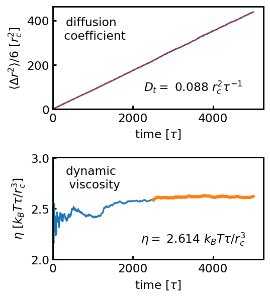

by Yawei Liu @ Sydney, Australia 2021/03/28
The diffusion coefficient (\(D_t\)) and dynamic viscosity (\(\eta\)) are fundamental properties of a solvent, which are embedded into many dimensionless numbers (such as the Schmidt number and Reynolds number) for hydrodynamic behaviours, thus often need to know for describing some processes involving the hydrodynamic interactions, such as the dynamics of colloidal particles in the solvent [1].
In particle dynamics simulations, \(D_t\) can be calculated from the slope of the mean-square displacement averaged over the trajectory of a solvent particle, \[D_t = \lim_{t\rightarrow \infty} \dfrac{\partial}{\partial}\dfrac{\langle|\textbf{r}(t)-\textbf{r}(0)|^2\rangle}{6}\] where \(\textbf{r}(t)\) denotes the particle trajectory that is continuous with time (\(t\)) in Cartesian space. \(\eta\) can be calculated by using the Green-Kubo relation: \[\eta = \dfrac{V}{k_BT}\int_0^\infty \langle \delta p_{xy}(t) \delta p_{xy}(0) \rangle dt\] where \(V\) is the volume of the simulation box, \(k_B\) is the Boltzmann constant, \(T\) is the temperature, and the integral term is the autocorrelation function of the off-diagonal element of the pressure tensor (\(\delta p_{xy}(t)\)).
Below is a LAMMPS script to measure \(D_t\) and \(\eta\) for a simple dissipative particle dynamics (DPD) solvent.
# DPD fluid
units lj
atom_style atomic
boundary p p p
variable mytemp equal 1.0
variable p equal 100 # correlation length
variable s equal 1 # sample interval
variable d equal $p*$s # dump interval
##create box
region box block -5 5 -5 5 -5 5 units box
create_box 1 box
##create atoms
variable N equal round(3*vol)
create_atoms 1 random $N 589973 box
mass * 1.0
##potential
pair_style dpd ${mytemp} 1.0 34387
pair_coeff 1 1 25 100
comm_modify vel yes
timestep 0.005
##init. velocity
velocity all create ${mytemp} 4928459 rot yes dist gaussian
fix mynve all nve
##define variables
variable step equal step
variable time equal time
variable lx equal lx
variable ly equal ly
variable lz equal lz
variable temp equal temp
variable pxx equal pxx
variable pyy equal pyy
variable pzz equal pzz
variable density equal atoms/vol
thermo_style custom step atoms temp press lx v_density
thermo $d
thermo_modify flush yes
##eq.
run 100000
##compute viscosity
variable pxy equal pxy
variable pxz equal pxz
variable pyz equal pyz
fix SS all ave/correlate $s $p $d v_pxy v_pxz v_pyz type auto ave running
variable scale equal 1.0/${mytemp}*vol*$s*dt
variable v11 equal trap(f_SS[3])*${scale}
variable v22 equal trap(f_SS[4])*${scale}
variable v33 equal trap(f_SS[5])*${scale}
variable visc equal (v_v11+v_v22+v_v33)/3.0
##define msd
compute msd all msd com yes
variable msd equal c_msd[4]
dump myxyz all xyz 10000 result_atoms.xyz
fix log all print 1000 "${step} ${time} ${temp} ${pxx} ${pyy} ${pzz} ${lx} ${ly} ${lz} ${msd} ${visc}" title "step time temp pxx pyy pzz lx ly lz msd visc" file result_thermo.log screen no
run 1000000Note that in the script, we use the average trajectories over all solvent particles, and the average pressure tensor over the three off-diagonal elements of the pressure tensor (\(p_{xy}\),\(p_{xz}\),\(p_{yz}\)). All data are written into the file result_thermo.log as shown below:
step time temp pxx pyy pzz lx ly lz msd visc
100000 500 0.984188 27.794703 23.130347 22.842476 10 10 10 0.000000 2.958720
101000 505 1.042054 18.902794 21.897468 22.178893 10 10 10 2.526882 1.999164
102000 510 1.035879 21.304489 24.544993 23.814086 10 10 10 5.085313 2.251273
103000 515 1.018747 23.502038 24.887678 22.543412 10 10 10 7.966246 2.269344
104000 520 0.987128 24.575900 24.499697 21.390027 10 10 10 10.548230 2.219929
... ... ... ... ... ... ... ... ... ... ... ...To extract \(D_t\) and \(\eta\) from these data, we can use this Python script:
import numpy as np
import pandas as pd
from scipy.optimize import curve_fit
import matplotlib.pyplot as plt
def _msd(x,a,b):
return a*x+b
data = pd.read_csv('result_thermo.log',sep='\s+')
fig = plt.figure(figsize=(4,4.4), dpi=140);
#diffusion
ax = fig.add_subplot(211);
x = data['time']
x = x-x[0]
y = data['msd']/6.
ax.plot(x,y);
popt, pcov = curve_fit(_msd, x, y)
perr = np.sqrt(np.diag(pcov))
y_fit = popt[0]*x+popt[1]
ax.plot(x,y_fit,'r--',lw=1);
ax.text(150,60,'diffusion \n coefficient',va="center", ha="center")
ax.text(550,20,r'$D_{t}=$ %.3f $r_c^2\tau^{-1}$' %(popt[0]),va="center", ha="center")
ax.set_xlabel(r'time [$\tau$]');
ax.set_ylabel(r'$\langle \Delta r^2 \rangle/6$ [$r_c^2$]');
ax.set_xlim(0,);
ax.set_ylim(0,);
ax.tick_params(direction='in')
#viscosity
ax = fig.add_subplot(212);
SIZE = int(len(data)/2)
x = data['time'].values
x = x-x[0]
y = data['visc'].values
visc = y[SIZE:].mean()
ax.plot(x,y);
ax.plot(x[SIZE:],y[SIZE:],lw=3);
ax.text(250,2.8,'dynamic viscosity',va="center", ha="center")
ax.text(550,2.2,r'$\eta=$ %.3f $k_BT\tau/r_c^3$' %(visc),va="center", ha="center")
ax.set_xlabel(r'time [$\tau$]');
ax.set_ylabel(r'$\eta$ [$k_BT\tau/r_c^3$]');
ax.set_xlim(0,);
ax.set_ylim(2,);
ax.tick_params(direction='in')
plt.tight_layout()
plt.show()The results are:

© 2021 Yawei Liu. All content licensed under the Creative Commons Attribution License (CC-BY-NC 4.0).